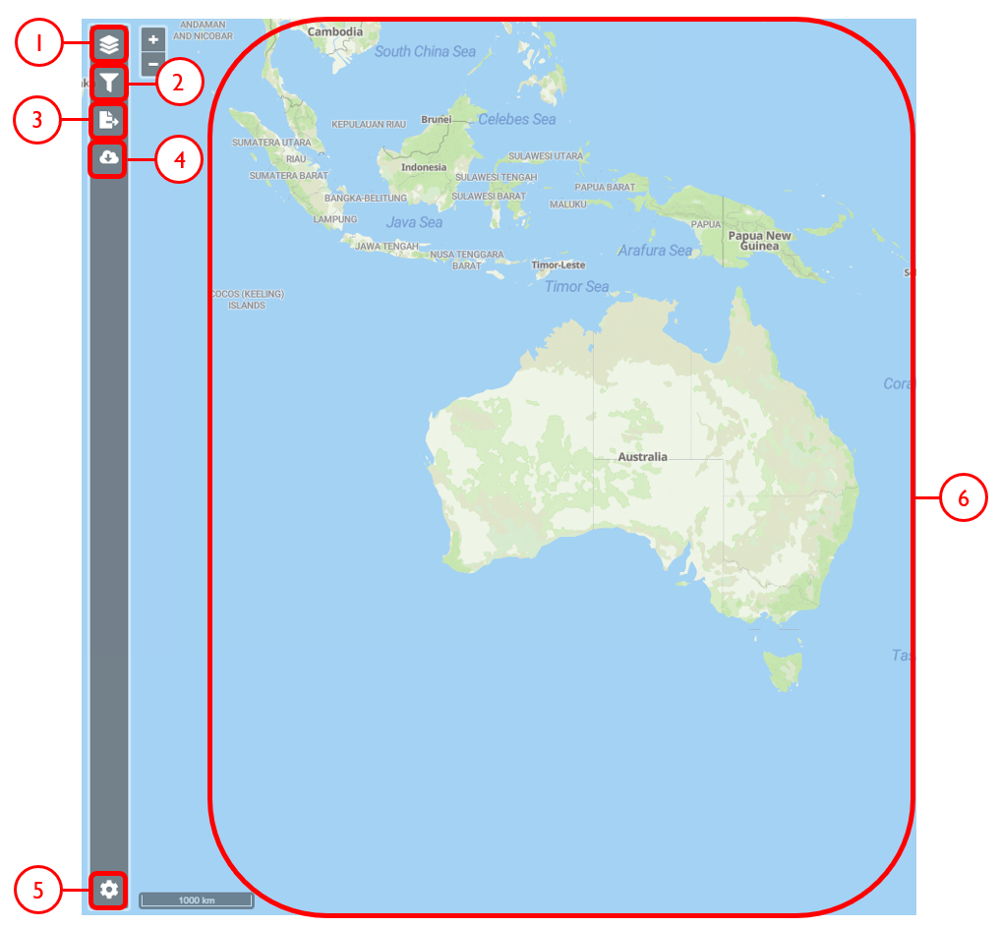

Data access
OCTOPUS data can be viewed and exported through a bespoke Web interface or accessed directly via Web Feature Service (WFS). The latter allows users to access database content via third party software such as Geographic Information Systems (GIS), or R language. OCTOPUS data is served by GeoServer 1, an open server solution for sharing geospatial data. Unless data from OCTOPUS is explicitly downloaded and locally stored by the user, it will remain cloud-borne, so the user will not have to care about data storage and being up-to-date.
Web Feature Service
This user guide and brief demonstration of capabilities outlines how to use WFS through third-party software, specifically QGIS and/or R software environment as these software solutions are free, open-source and highly versatile.
WFS in a nutshell
GetCapabilities, DescribeFeatureType, and GetFeature. Calling GetCapabilities will generate a standardised, human readable meta-dataset that describes a WFS service and its functionality. DescribeFeatureType produces an overview of supported feature types, and GetFeature fetches features including their geometry and attribite values, i.e, variable fields.WFS data access via QGIS
After opening QGIS, start a new project: Project > New
In the Browser pane, select WFS/OGC API Features > New Connection…
{kind=link}
Name the new connection (e.g., ‘OCTOPUS’) and insert the link http://geoserver.octopusdata.org/geoserver/wfs in the URL field. Click OK. All available OCTOPUS collections will appear in the Browser pane once a connection is established
{kind=link}
To add a collection of interest, right click on that collection in the Browser pane and select Add Layer to Project. The collection will appear in the Layers pane. Alternatively, click + drag the layer of interest into the Layers pane
To locally store a collection, select Export Layer > To File
Select a file format and specify a file name and save location via the ‘…’ button. Select the coordinate reference system (CRS) of choice; OCTOPUS v.2 collections use EPSG: 3857 (WGS84 Pseudo-Mercator)
{kind=link}
To add a saved shapefile to the project, navigate to the main menu > Layer > Add Layer > Add Vector Layer. Selecting the .shp, .dbf or .shx file (of the six separate files that constitute the shapefile) will open the collection in the Layers pane
Excursus. Obtaining obfuscated geographical coordinates in QGIS
Sites belonging to OCTOPUS data collections SahulArch and FosSahul are potentially culturally sensitive. As a result, coordinates have been obfuscated for these collections using a 25-km radius randomising algorithm. These former point data are represented by polygons now and coordinates are not pushed with the attribute table, or the .csv file if the collection is exported. Follow these steps to obtain obfuscated coordinates (keeping in mind the uncertainty introduced by obfuscation) for these collections by calculating polygon centroid points:
Navigate to the main menu > Vector > Geometry Tools > Centroids…
Select the collection of interest as the Input Layer, and click Run
{kind=link}
To save coordinates, go to the Processing Toolbox pane and select Vector table > Add X/Y fields to layer
Input Layer should appear as the generated centroids, and the coordinate system must be kept as default EPSG: 4326 – WGS84
Click Run. This will generate a new layer, Added Fields, in the Layers pane. In the Attribute Table, fields for ‘x’ (longitude) and ‘y’ (latitude) will appear at the end of the table with corresponding coordinates for each point feature
{kind=link}
WFS data access via R/RStudio
The below demo R script fetches, via WFS, spatial layers including rich attribute data from OCTOPUS database and generates a scatter plot and an interactive map representation, respectively.
Important
The script requires the below packages. If not installed on your machine yet, run
install.packages(c("sf","httr","tidyverse","ows4R","viridis", "mapview", dependencies = TRUE))
and you’ll be all set up.
First we’re going to load the required packages
library(sf) # Simple features support (sf = standardized way to encode spatial vector data)
library(httr) # Generic web-service package for working with HTTP
library(tidyverse) # Workhorse collection of R packages for data sciences
library(ows4R) # Interface for OGC web-services incl. WFS
library(viridis) # Predefined colorblind-friendly color scales for R
OK, we’re ready to go now. In the following we store the OCTOPUS WFS URL in an object. Then, using the latter, we establish a connection to OCTOPUS database.
OCTOPUSdata <- "http://geoserver.octopusdata.org/geoserver/wfs" # store url in object
OCTOPUSdata_client <- WFSClient$new(OCTOPUSdata, serviceVersion = "2.0.0") # connection to db
Let’s see what is there, i.e. show all available layer names and titles
OCTOPUSdata_client$getFeatureTypes(pretty = TRUE) # show available layers and titles
The above WFS request should yield the following overview
name title
1 be10-denude:crn_aus_basins CRN Australian collection: River basins
2 be10-denude:crn_aus_outlets CRN Australian collection: Sample sites
3 be10-denude:crn_int_basins CRN Global collection: River basins
4 be10-denude:crn_int_outlets CRN Global collection: Sample sites
5 be10-denude:crn_xxl_basins CRN Large basins: River basins
6 be10-denude:crn_xxl_outlets CRN Large basins: Sample sites
7 be10-denude:crn_inprep_basins CRN UOW (in preparation): River basins
8 be10-denude:crn_inprep_outlets CRN UOW (in preparation): Sample sites
9 be10-denude:publications CRN basin bounding boxes
10 opengeo:countries Countries of the World
11 be10-denude:expage ExpAge Database
12 be10-denude:fossahul_webmercator_nrand_25000 FosSahul Database
13 be10-denude:sahularch_osl Sahul Archaeology: OSL collection
14 be10-denude:sahularch_c14 Sahul Archaeology: Radiocarbon collection
15 be10-denude:sahularch_tl Sahul Archaeology: TL collection
16 be10-denude:sahulsed_aeolian_osl Sahul Sedimentary Archives: Aeolian OSL
17 be10-denude:sahulsed_aeolian_tl Sahul Sedimentary Archives: Aeolian TL
18 be10-denude:sahulsed_fluvial_osl Sahul Sedimentary Archives: Fluvial OSL
19 be10-denude:sahulsed_fluvial_tl Sahul Sedimentary Archives: Fluvial TL
20 be10-denude:sahulsed_lacustrine_osl Sahul Sedimentary Archives: Lacustrine OSL
21 be10-denude:sahulsed_lacustrine_tl Sahul Sedimentary Archives: Lacustrine TL
That’s basically it. Talking to the database via WFS takes three short lines of code. Everything below this line does not deal with data access anymore, but with data presentation. 3
Example 1. Australian Be-10-derived catchment-averaged denudation rates
In this example we fetch and plot Australian catchment-averaged Be-10 denudation rates (i.e., layer ‘be10-denude:crn_aus_basins’ from the above list)
url <- parse_url(OCTOPUSdata) # parse URL into list
url$query <- list(service = "wfs",
version = "2.0.0",
request = "GetFeature",
typename = "be10-denude:crn_aus_basins",
srsName = "EPSG:900913") # set parameters for url$query
request <- build_url(url) # build a request URL from 'url' list
CRN_AUS_basins <- read_sf(request) # read simple features using 'request' URL. Takes few secs...
Now that we have the data available, we define our plot parameters. We want to plot denudation rate (“EBE_MMKYR”) over average slope gradient (“SLP_AVE”) and call the plot (last line)
myPlot <- ggplot(CRN_AUS_basins, aes(x=SLP_AVE, y=EBE_MMKYR)) + # plot denudation rate over average slope
geom_errorbar(aes(ymin=(EBE_MMKYR-EBE_ERR), ymax=(EBE_MMKYR+EBE_ERR)), linewidth=0.3, colour="gray80") + # visualise errors
geom_point(aes(size=AREA, color=ELEV_AVE), alpha=.5) + # scale pts. to "AREA", colour pts. to "ELEV_AVE"
scale_color_viridis(option="C", direction = -1) + # use 'viridis' colour scale
scale_size_continuous(range = c(2, 10)) + # define point size range for better visibility
xlab("Slope gradient [m km^-1]") + ylab("Denudation rate [mm kyr^-1]") + # set labels for x and y axes
ggtitle("Australian Be-10 catchment-avg. denudation rates") + # make title
theme(plot.title = element_text(size = 18, face = "bold")) + # title settings
labs(size = "Catchment \narea [km^2]", colour = "Average \ncatchment \nelevation [m]") # re-label legend
myPlot # call plot
{kind=link}
Example 2. Australian sedimentary fluvial OSL ages
For this example we quickly want to display Australian OSL (Optically Stimulated Luminescence) ages on a base map.
library(mapview) # Provides functions for quick visualisation of spatial data
mapviewOptions(fgb = FALSE)
url2 <- parse_url(OCTOPUSdata) # parse URL into list
url2$query <- list(service = "wfs",
version = "2.0.0",
request = "GetFeature",
typename = "be10-denude:sahulsed_fluvial_osl",
srsName = "EPSG:900913") # set parameters for url$query
request2 <- build_url(url2) # build request URL from 'url' list
SahulSed.FLV.OSL <- read_sf(request2) # read simple features using 'request' URL. Takes few secs...
SahulSed.FLV.OSL <- st_set_crs(SahulSed.FLV.OSL, 900913) # Set Coordinate Reference System
SahulSed.FLV.OSL = st_transform(SahulSed.FLV.OSL,
crs = "+proj=longlat +datum=WGS84") # Transform geometry to geographic coordinates, WGS84
mapview(SahulSed.FLV.OSL, xcol = "X_WGS84", ycol = "Y_WGS84",
zcol = "OSL_AGE", at = seq(0, 350, 50), alpha = .25, # set range (0 to 350 ka) and bins (50 ka)
alpha.regions = 0.1, legend = TRUE) # Display on map using "mapview" package
{kind=link}
All done!
Tip
Thanks to the very slick ‘Mapview’ 4 functionality, points of the original output map are mouse-over sensitive and can be queried in depth by clicking. Further, the map is scalable and you can choose between a decent selection of base map layers. Try it yourself in R or have a look at a fully functional copy of the above script on RPubs!
Web interface
{kind=link}
{kind=link}
{kind=link}
{kind=link}
{kind=link}
{kind=link}
{kind=link}
Example use cases
Use case #1
In this example, we will prepare a map of Australian archaeological radiocarbon ages >10,000 BP with a monochrome map and no data point clustering.
{kind=link}
{kind=link}
{kind=link}
{kind=link}
Use case #2
In this example, we will generate a Shapefile of Australian fluvial OSL dates from publications newer than the year 2000, derived from sediments or dating quartz, collected by core or by auger.
{kind=link}
{kind=link}
{kind=link}
{kind=link}
{kind=link}
{kind=link}
{kind=link}
{kind=link}
{kind=link}
{kind=link}
{kind=link}
Use case #3
In this example, we will generate KML files of archaeological, fossil, and sediment age determinations from Cape York Peninsula (IBRA bioregion 5) between 1000 and 8000 years old.
{kind=link}
{kind=link}
{kind=link}
{kind=link}
{kind=link}
{kind=link}
Footnotes